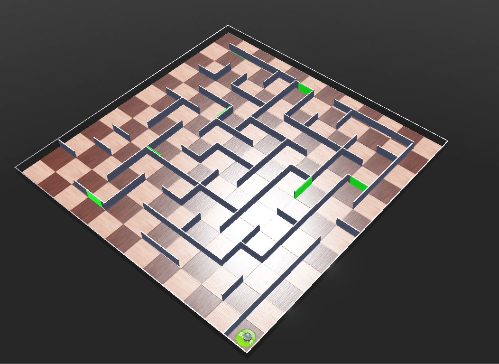
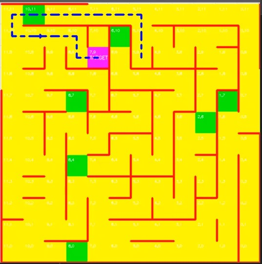
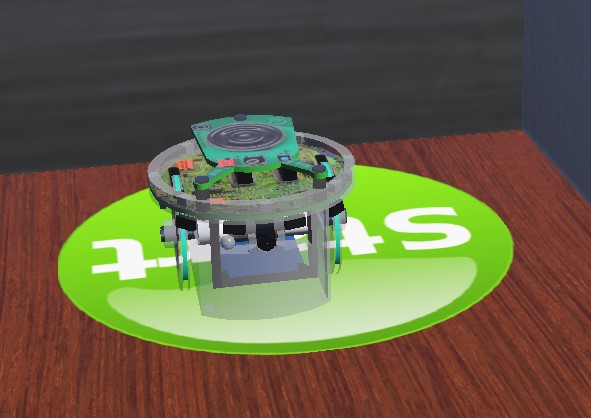

Project Overview
RoboRoarZ is a fully autonomous robot simulated in the Webots environment. Built using Python, the robot is designed to explore an unknown 12x12 grid maze, map its surroundings in real-time using OpenCV, detect visual checkpoints via camera sensors, and calculate the absolute shortest path to its target using Breadth-First Search (BFS) algorithms.
Simulation Demonstration
Watch the robot autonomously map the maze and navigate to its target.
Technical Implementation
🔍 Autonomous Exploration
Utilizes a robust left-wall following algorithm with fallback backtracking mechanisms. Distance sensors (ps0, ps5, ps7) constantly evaluate walls against a threshold to determine valid movement coordinates.
🗺️ Real-Time OpenCV Mapping
As the robot moves, it constructs a dynamic 2D map using OpenCV. It visualizes visited tiles, detected walls (red lines), and active orientation, providing a live debug interface of the robot's spatial awareness.
⚙️ Kinematics & Drift Correction
Calculates exact wheel rotation using encoder values and axle length. To combat simulation physics drift, a custom compensation algorithm triggers corrective micro-turns based on differential turn counts.
🧠 BFS Shortest Path Navigation
Once exploration is complete, the robot doesn't just retrace its steps. It runs a Breadth-First Search (BFS) over its recorded wall data to calculate and execute the true shortest path (blue dashed line) to the final target.
📷 HSV Color Vision
Processes raw camera buffers into HSV color space using OpenCV to filter and detect green checkpoints. Includes a "head-shake" scanning routine when suspicious color percentages trigger the threshold.
Project Gallery
Visual breakdowns of the environment and mapping algorithms.


